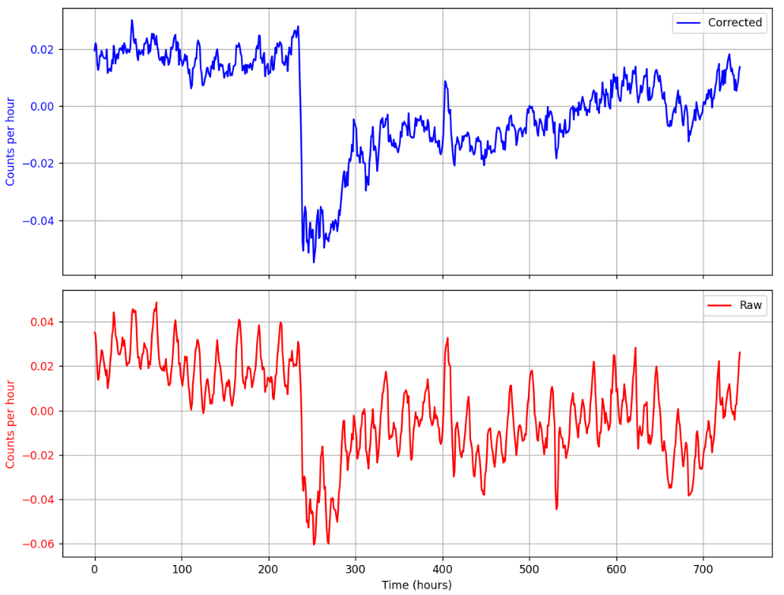

Cosmic rays are high-energy particles originating from outer space, primarily composed of protons and atomic nuclei. When these particles interact with Earth’s atmosphere, they generate extensive air showers (EAS) consisting of secondary particles such as muons, electrons, and positrons.
One effective method for detecting these particles is through a Water Cherenkov Detector (WCD), which utilizes the Cherenkov radiation produced by charged particles traveling faster than the speed of light in water.
A WCD consists of a large volume of purified water surrounded by photomultiplier tubes (PMTs). When a charged particle from an air shower passes through the water, it emits Cherenkov light, which is detected by the PMTs. The resulting signal is digitized and analyzed to extract key features such as:
One of the most significant transient effects observed in cosmic ray data is a Forbush decrease (FD), a sudden reduction in cosmic ray intensity caused by coronal mass ejections (CMEs) from the Sun. These CMEs carry magnetic fields that deflect cosmic rays, leading to a temporary drop in detection rates at ground-based observatories. Identifying FDs in WCD data requires continuous monitoring and statistical analysis of cosmic ray flux over time.
Forbush decrease recorded by UNAM, characterized by a rapid decline in cosmic ray intensity (variation %) due to a coronal mass ejection (CME), followed by a gradual return to normal levels.
The intensity of detected cosmic rays is affected by local atmospheric conditions, primarily pressure and temperature:
Correlation matrix between rates variation and pressure. It shows inverse correlation.
The main steps in analyzing WCD data for cosmic ray studies include: